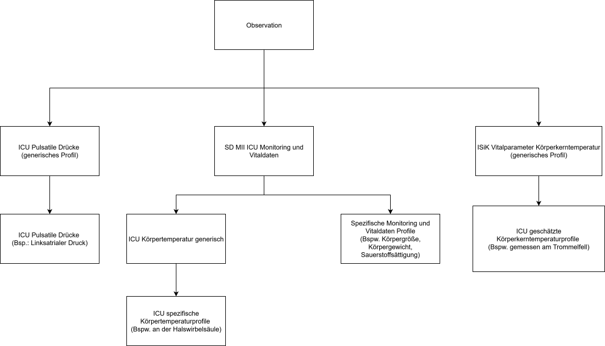

Seiteninhalt:
Auf dieser Seite befindet sich eine Liste der FHIR-Artefakte, welche im Rahmen dieses Implementation Guide definiert werden.
An dieser Stelle werden Festlegungen zu Profilen getroffen, die für die Intensiv- sowie Normalversorgung vorgesehen sind und dem Kontext des Moduls zur Intensivmedizinische Versorgung (ICU) der MII entstammen.
Datenobjekte, die der Rolle VitalSign Standard Source zugeordnet sind, werden hier nicht als eigenständige Profile geführt, sondern sind dem entsprechenden Implementierungsleitfaden zu entnehmen.
Im Rahmen des Moduls zur Intensivmedizinische Versorgung (ICU) der MII hat die MII Profile bereitgestellt, die sich für die Verarbeitung von Vitalparametern im Rahmen der intensiv- sowie normalstationären Versorgung eignen. Die Profile der MII sind medizinisch qualitätsgesichert und weisen eine feingranulare Kodierung vor.
Durch die Übernahme der Profile der MII und Abbildung auf das ISIK-Setting, können feingranular kodierte Profile zu Vitalparametern im Krankenhauskontext genutzt werden - für die Normal- wie für die intensivmedizinische Versorgung.
Folgende Datenobjekte aus dem Modul ISiK Basis werden in diesem Modul verwendet:
Die Verwendung der genannten Ressourcen in diesem Modul bedeutet: Wenn ein Profil aus diesem Modul auf die genannten Datenobjekte aus dem Basismodul referenziert, dann MÜSSEN die referenzierten FHIR-Ressourcen im ISiK-Kontext konform zu Vorgaben an diese Ressourcen aus dem Basismodul sein (Profilkonformität). In diesem Zusammenhang sind insbesondere die Vorgaben zur Herstellung des Patienten- und Encounter-Kontextes zu beachten.
Die konkreten Vorgaben zu Interaktionen und Abhängigkeiten zwischen Modulen werden noch präzisiert.
Zur Unterstützung der Überleitung zwischen intensivmedizinischer und normalstationärer Versorgung (siehe Use Cases), MÜSSEN alle Profile aus dem ISIK Support Modul Labor von einem bestätigungsrelevanten System implementiert werden, sofern das System diese Daten verwaltet (z.B. in Form einer Übernahme aus einem Laborinformationssystem).
Die folgende Darstellung zeigt die Vererbungsstruktur aller ICU-Profile in diesem Modul:

Das CapabilityStatement mit der Kennzeichnung "Expanded" dient der direkten Übersicht aller zu implementierender Interaktionen und Profile.
| ISiK CapabilityStatement Vitalparameter Server Extended (Expanded) |
Das vorliegende CapabilityStatement fasst die Rollen (und entsprechende Interaktionen) zusammen, die ein Akteur 'VitalSign ICU Source Extended' zur Unterstützung des ICU-Normalstation-Workflows implementieren muss Zur Implementierung der Interaktionen sind insbesondere die zu implementierenden Rollen (siehe 'imports' in der CapabilityStatement-Ressource) zu beachten. HISTORIE: Historie: mit der Version 4.0.2 des IG ICU-Normalstation-Workflow wurde das vorliegende CapabilityStatement im Sinne eines eigenständigen Akteurs extrahiert (die Funktionalität bleibt dabei unverändert). Historie: mit der Version 4.0.1 des IG ICU-Normalstation-Workflow wurde das vorliegende CapabilityStatement überarbeitet. |
| ISiK CapabilityStatement Vitalparameter Server Extended |
Das vorliegende CapabilityStatement fasst die Rollen (und entsprechende Interaktionen) zusammen, die ein Akteur 'VitalSign ICU Source Extended' zur Unterstützung des ICU-Normalstation-Workflows implementieren muss Zur Implementierung der Interaktionen sind insbesondere die zu implementierenden Rollen (siehe 'imports' in der CapabilityStatement-Ressource) zu beachten. HISTORIE: Historie: mit der Version 4.0.2 des IG ICU-Normalstation-Workflow wurde das vorliegende CapabilityStatement im Sinne eines eigenständigen Akteurs extrahiert (die Funktionalität bleibt dabei unverändert). Historie: mit der Version 4.0.1 des IG ICU-Normalstation-Workflow wurde das vorliegende CapabilityStatement überarbeitet. |
| ISiK CapabilityStatement VitalSign ICU Source Minimal Akteur (Expanded) |
Das vorliegende CapabilityStatement fasst die Rollen (und entsprechende Interaktionen) zusammen, die ein Akteur 'VitalSign ICU Source Minimal' zur Unterstützung des ICU-Normalstation-Workflows implementieren muss. Zur Implementierung der Interaktionen sind insbesondere die zu implementierenden Rollen (siehe 'imports' in der CapabilityStatement-Ressource) zu beachten. HISTORIE: Historie: mit der Version 4.0.2 des IG ICU-Normalstation-Workflow wurde das vorliegende CapabilityStatement im Sinne eines eigenständigen Akteurs extrahiert (die Funktionalität bleibt dabei unverändert). Historie: mit der Version 4.0.1 des IG ICU-Normalstation-Workflow wurde das vorliegende CapabilityStatement überarbeitet. Version 4.0.1
|
| ISiK CapabilityStatement VitalSign ICU Source Minimal Akteur |
Das vorliegende CapabilityStatement fasst die Rollen (und entsprechende Interaktionen) zusammen, die ein Akteur 'VitalSign ICU Source Minimal' zur Unterstützung des ICU-Normalstation-Workflows implementieren muss. Zur Implementierung der Interaktionen sind insbesondere die zu implementierenden Rollen (siehe 'imports' in der CapabilityStatement-Ressource) zu beachten. HISTORIE: Historie: mit der Version 4.0.2 des IG ICU-Normalstation-Workflow wurde das vorliegende CapabilityStatement im Sinne eines eigenständigen Akteurs extrahiert (die Funktionalität bleibt dabei unverändert). Historie: mit der Version 4.0.1 des IG ICU-Normalstation-Workflow wurde das vorliegende CapabilityStatement überarbeitet. Version 4.0.1
|
| ISiK CapabilityStatement Labor Minimal Rolle |
Das vorliegende CapabilityStatement beschreibt Interaktionen für ein System, das Labordaten exponiert. HISTORIE Historie: mit der Version 4.0.2 des IG ICU-Normalstation-Workflow wurde das vorliegende CapabilityStatement im Sinne einer eigenständigen Rolle extrahiert (die Funktionalität bleibt dabei unverändert). |
| ISiK CapabilityStatement Organspendeerkennung Source Rolle |
Das vorliegende CapabilityStatement beschreibt verpflichtende Interaktionen, die ein ISiK-konformes System oder eine Systemkomponenten in der Rolle 'Organspendeerkennung Source Minimal' zur Unterstützung des Organspendeerkennungs-Workflows implementieren muss. Die Interaktionen umfassen die Bereitstellung von Vitalparametern, die für eine IHA-Diagnostik wesentlich sind. HISTORIE: Historie: mit der Version 6.0.0-rc des IG Organspendeerkennung wurde das vorliegende CapabilityStatement im Sinne einer eigenständigen Rolle erstellt. |
| CapabilityStatement für Rolle StammdatenRolle |
CapabilityStatement für die Rolle ISiKCapabilityStatementStammdatenRolle. Diese Rolle beschreibt Interaktionen zum Abruf und der Verarbeitung grundlegender Stammdaten. |
| ISiK CapabilityStatement VitalSign ICU Source Extended |
Das vorliegende CapabilityStatement beschreibt verpflichtende Interaktionen, die ein ISiK-konformes System oder eine Systemkomponente in der Rolle 'VitalSign ICU Source Extended' zur Unterstützung des ICU-Normalstation-Workflows implementieren muss. Die Interaktionen umfassen die Bereitstellung von Vitalparametern, die für die Behandlung von Intensivpatienten notwendig sind und sie z.B. typischerweise auf einer Intensivstation in einem PDMS erfasst werden. HISTORIE: Historie: mit der Version 4.0.2 des IG ICU-Normalstation-Workflow wurde das vorliegende CapabilityStatement im Sinne einer eigenständigen Rolle extrahiert (die Funktionalität bleibt dabei unverändert). Historie: mit der Version 4.0.1 des IG ICU-Normalstation-Workflow wurde das vorliegende CapabilityStatement überarbeitet. |
| ISiK CapabilityStatement VitalSign ICU Source Minimal Rolle |
Das vorliegende CapabilityStatement beschreibt verpflichtende Interaktionen, die ein ISiK-konformes System oder eine Systemkomponenten in der Rolle 'VitalSign ICU Source Minimal' zur Unterstützung des ICU-Normalstation-Workflows implementieren muss. Die Interaktionen umfassen die Bereitstellung von Vitalparametern, die für die Behandlung von Patienten notwendig sind und sie z.B. typischerweise auf einer Normalstation in einem KIS erfasst werden. HISTORIE: Historie: mit der Version 4.0.2 des IG ICU-Normalstation-Workflow wurde das vorliegende CapabilityStatement im Sinne einer eigenständigen Rolle extrahiert (die Funktionalität bleibt dabei unverändert). Historie: mit der Version 4.0.1 des IG ICU-Normalstation-Workflow wurde das vorliegende CapabilityStatement überarbeitet. Version 4.0.1
|
| ISiK CapabilityStatement VitalSign Standard Source Rolle |
Das vorliegende CapabilityStatement beschreibt alle verpflichtenden Interaktionen, die ein ISiK-konformes System unterstützen muss, um das Bestätigungsverfahren für das Modul Vitalparameter zu bestehen. HISTORIE: Historie: mit der Version 4.0.2 des IG ICU-Normalstation-Workflow wurde das vorliegende CapabilityStatement im Sinne einer eigenständigen Rolle extrahiert (die Funktionalität bleibt dabei unverändert). Version 4.0.1
|
| ISiKCoding (Coding) | Coding |
Data Type profile for Codings in ISiK |
| ISiKLoincCoding (ISiKCoding) | Coding |
Data Type profile for LOINC Codings in ISiK |
| ISiKSnomedCTCoding (ISiKCoding) | Coding |
Data Type profile for Snomed-CT Codings in ISiK |
| ISiK CapabilityStatement Imports Expectation (Extension) |
Defines the level of expectation associated with a given system capability. See the capabilitystatement-prohibited modifier extension to set expectations to not support a feature. |
| ExtensionISiKRehaEntlassung (Extension) |
Extension zur Dokumentation von Informationen nach §301 (4 und 4a) SGB V, entsprechend dem ärztliche Reha-Entlassungsbericht. Mit dieser Extension können spezifische Entlassungsinformationen im Kontext einer Rehabilitationsmaßnahme angegeben werden. Dies ist besonders relevant für Einrichtungen, die Leistungen im Bereich Rehabilitation erbringen, und unterstützt die strukturierte Kommunikation im Entlassmanagement. |
| ISiKKontaktGesundheitseinrichtung (Encounter) | Encounter |
Dieses Profil ermöglicht die Abbildung von Besuchen/Aufenthalten eines Patienten in einer Gesundheitseinrichtung. Motivation Informationen über die Besuche des Patienten entlang seines Behandlungspfades im Krankenhaus sind ein wichtiger Bestandteil des einrichtungsinternen Datenaustausches. Sie ermöglichen die Unterscheidung von stationären und ambulanten sowie aufgenommenen und entlassenen Patienten. Weiterhin ist aus den Besuchsinformationen der aktuelle Aufenthaltsort des Patienten (Fachabteilung, Station, Bettplatz) ermittelbar. Klinische Ressourcen werden in FHIR durch Verlinkung auf die Encounter-Ressource in einen Kontext zum Besuch gestellt. Dieser Kontext ist wichtig für die Steuerung von Zugriffsberechtigungen und Abrechnungsprozessen. Zu Beginn der meisten klinischen Workflows steht die Auswahl des Besuchskontextes. Dies geschieht bspw. durch das Suchen der Encounter-Ressource anhand von Eigenschaften wie Aufnahmenummer, Fallart oder Aufnahmedatum. Daraufhin werden die zutreffenden Suchergebnisse angezeigt und der gewünschte Besuch ausgewählt. In FHIR werden Besuche, Aufenthalte, aber auch virtuelle Kontakte mit der Weitere Hinweise zu den Abgrenzungen der Begrifflichkeiten Fall und Kontakt finden sie unter Fall-Begriff in ISiK. Kompatibilität Für das Profil ISiKKontaktGesundheitseinrichtung wird eine Kompatibilität mit folgenden Profilen angestrebt; allerdings kann nicht sichergestellt werden, dass Instanzen, die gegen ISiKKontaktGesundheitseinrichtung valide sind, auch valide sind gegen: Hinweise zu Inkompatibilitäten können über die Portalseite gemeldet werden. |
| ISiKStandort (Location) | Location |
Dieses Profil dient der strukturierten Erfassung von Standortangaben eines Krankenhauses oder von Organisationseinheiten innerhalb eines Krankenhauses in ISiK-Szenarien. Motivation In FHIR wird die Organisation (Organization) vom Standort (Location) eindeutig abgegrenzt. Die Abbildung von Standorten in einem Krankenhaus unterstützt u.a. die Raum- und Bettenbelegung in strukturierter Form. Die Erfassung des Standortes in strukturierter Form soll u.a. ermöglichen:
Dafür werden Standort-Profile in unterschiedlicher Granularität definiert. Kompatibilität Für das Profil ISiKStandort wurde bis zum Zeitpunkt der Veröffentlichung kein Abgleich der
Kompatibilität zu anderen Profilen (der KBV und der Medizininformatik-Initiative) durchgeführt. |
| ISiKAtemfrequenz (VitalSignDE_Atemfrequenz) | Observation |
Dieses Profil spezifiziert die Minimalanforderungen für die Bereitstellung von Informationen über die Atemfrequenz eines Patienten im Rahmen der interoperablen Kommunikation gemäß den Vorgaben der ISiK. Motivation Die Erfassung und Überwachung der Atemfrequenz ist essenziell für die frühzeitige Erkennung von Gesundheitsveränderungen, die Behandlungsbewertung und die Unterstützung klinischer Entscheidungen. In FHIR wird die Atemfrequenz mit der Observation-Ressource repräsentiert. Kompatibilität Das Profil ISiKAtemfrequenz ist vom Profil VitalSignDE_Atemfrequenz aus den deutschen Basisprofilen abgeleitet. Es ist kompatibel mit dem Profil Observation Respiratory Rate Profile aus der FHIR R4 Spezifikation. |
| ISiKBlutdruckSystemischArteriell (VitalSignDE_Blutdruck) | Observation |
Dieses Profil spezifiziert die Minimalanforderungen für die Bereitstellung von Informationen über den Blutdruck eines Patienten im Rahmen der interoperablen Kommunikation gemäß den Vorgaben der ISiK. Motivation Die Erfassung und Überwachung des Blutdrucks ist essenziell für die frühzeitige Erkennung von Gesundheitsveränderungen, die Behandlungsbewertung und die Unterstützung klinischer Entscheidungen. In FHIR wird der Blutdruck mit der Observation-Ressource repräsentiert, die einzelnen Komponenten des Blutdrucks werden als Component-Elemente abgebildet. Hinweis: In Fällen, in denen fachlich motiviert ausschließlich ein systolischer Blutdruck erhoben wird (z.B. in der Intensivmedizin), kann für den Slice zur Diastole (DiastolicBP) das Element .dataAbsentReason (mit dem Code 'not-performed') verwendet werden. Kompatibilität Das Profil ISiKBlutdruckSystemischArteriell ist vom Profil VitalSignDE_Blutdruck aus den deutschen Basisprofilen abgeleitet. Es ist kompatibel mit dem Profil Observation Blood Pressure Profile aus der FHIR R4 Spezifikation. |
| ISiKEKG (EkgDE) | Observation |
Dieses Profil spezifiziert die Minimalanforderungen für die Bereitstellung von Informationen über kurze, relevante EKG-Ausschnitte eines Patienten im Rahmen der interoperablen Kommunikation gemäß den Vorgaben der ISiK. Es wurde entwickelt, um spezifische klinische Fragestellungen zu unterstützen, bei denen prägnante und gezielte EKG-Daten im Vordergrund stehen. Für vollständige und längere EKG-Aufzeichnungen sind alternative Formate vorgesehen, die für umfangreiche Daten besser geeignet sind. Motivation Die Bereitstellung kurzer EKG-Ausschnitte ermöglicht eine präzise und effiziente Unterstützung bei der Diagnose akuter kardiologischer Fragestellungen, der Überwachung von Arrhythmien oder der Beurteilung bestimmter Ereignisse wie ST-Strecken-Veränderungen. Diese fokussierte Darstellung dient der Optimierung klinischer Entscheidungen und der schnellen Verarbeitung relevanter Daten. In FHIR wird das EKG durch die Observation-Ressource repräsentiert, wobei spezifische Anforderungen für die Darstellung und Kodierung der Daten in diesem Profil berücksichtigt werden. Kompatibilität Das Profil ISiKEKG ist vom Profil EkgDE aus den deutschen Basisprofilen abgeleitet. |
| ISiKGCS (ScoreDE_GCS) | Observation |
Dieses Profil spezifiziert die Minimalanforderungen für die Bereitstellung von Informationen über den Glasgow Coma Scale (GCS) Score eines Patienten im Rahmen der interoperablen Kommunikation gemäß den Vorgaben der ISiK. Motivation Die Erfassung und Überwachung des Bewusstseinszustands anhand des GCS ist essenziell für die Beurteilung neurologischer Funktionen, die Überwachung von Patienten mit Schädel-Hirn-Trauma oder anderen neurologischen Erkrankungen sowie die Unterstützung klinischer Entscheidungen. In FHIR wird der GCS-Score mit der Observation-Ressource repräsentiert, wobei die einzelnen Komponenten der Skala - Augenöffnung, verbale Reaktion und motorische Reaktion - als Component-Elemente abgebildet werden. Kompatibilität Das Profil ISiKGCS ist vom Profil ScoreDE_GCS aus den deutschen Basisprofilen abgeleitet. |
| ISiKHerzfrequenz (VitalSignDE_Herzfrequenz) | Observation |
Dieses Profil spezifiziert die Minimalanforderungen für die Bereitstellung von Informationen über die Herzfrequenz eines Patienten im Rahmen der interoperablen Kommunikation gemäß den Vorgaben der ISiK. Motivation Die Erfassung und Überwachung der Herzfrequenz ist essenziell für die frühzeitige Erkennung von Herz-Kreislauf-Problemen, die Beurteilung des Gesundheitszustands sowie die Unterstützung klinischer Entscheidungen in der Patientenversorgung. In FHIR wird die Herzfrequenz mit der Observation-Ressource repräsentiert. Kompatibilität Das Profil ISiKHerzfrequenz ist vom Profil VitalSignDE_Herzfrequenz aus den deutschen Basisprofilen abgeleitet. Es ist kompatibel mit dem Profil Observation Respiratory Rate Profile aus der FHIR R4 Spezifikation. |
| ISiKKoerpergewicht (VitalSignDE_Koerpergewicht) | Observation |
Dieses Profil spezifiziert die Minimalanforderungen für die Bereitstellung von Informationen über das Körpergewicht eines Patienten im Rahmen der interoperablen Kommunikation gemäß den Vorgaben der ISiK. Motivation Die Erfassung und Überwachung des Körpergewichts ist essenziell für die Beurteilung des Ernährungszustands, die Überwachung von Veränderungen im Rahmen der Therapie sowie die Unterstützung klinischer Entscheidungen in der Patientenversorgung. In FHIR wird das Körpergewicht mit der Observation-Ressource repräsentiert. Kompatibilität Das Profil ISiKKoerpergewicht ist vom Profil VitalSignDE_Koerpergewicht aus den deutschen Basisprofilen abgeleitet. Es ist kompatibel mit dem Profil Observation Body Weight Profile aus der FHIR R4 Spezifikation. |
| ISiKKoerpergroesse (VitalSignDE_Koerpergroesse) | Observation |
Dieses Profil spezifiziert die Minimalanforderungen für die Bereitstellung von Informationen über die Körpergröße eines Patienten im Rahmen der interoperablen Kommunikation gemäß den Vorgaben der ISiK. Motivation Die Erfassung und Überwachung der Körpergröße ist essenziell für die Beurteilung von Wachstumsprozessen, die Berechnung wichtiger Indizes wie des Body-Mass-Index (BMI) sowie die Unterstützung klinischer Entscheidungen in der Patientenversorgung. In FHIR wird die Körpergröße mit der Observation-Ressource repräsentiert. Kompatibilität Das Profil ISiKKoerpergroesse ist vom Profil VitalSignDE_Koerpergroesse aus den deutschen Basisprofilen abgeleitet. Es ist kompatibel mit dem Profil Observation Body Height Profile aus der FHIR R4 Spezifikation. |
| ISiKKoerperkerntemperatur (VitalSignDE_Koerperkerntemperatur) | Observation |
Dieses Profil spezifiziert die Minimalanforderungen für die Bereitstellung von Informationen über die Körperkerntemperatur eines Patienten im Rahmen der interoperablen Kommunikation gemäß den ISiK Vorgaben. Motivation Die Erfassung und Überwachung der Körpertemperatur ist essenziell für die frühzeitige Erkennung von Infektionen, die Beurteilung des Gesundheitszustands sowie die Unterstützung klinischer Entscheidungen in der Patientenversorgung. In FHIR wird die Körpertemperatur mit der Observation-Ressource repräsentiert. Kompatibilität Das Profil ISiKKoerperkerntemperatur ist vom Profil VitalSignDE_Koerperkerntemperatur aus den deutschen Basisprofilen abgeleitet. Es ist kompatibel mit dem Profil Observation Body Temperature Profile aus der FHIR R4 Spezifikation. |
| ISiKKopfumfang (VitalSignDE_Kopfumfang) | Observation |
Dieses Profil spezifiziert die Minimalanforderungen für die Bereitstellung von Informationen über den Kopfumfang eines Patienten im Rahmen der interoperablen Kommunikation gemäß den Vorgaben der ISiK. Motivation Die Erfassung und Überwachung des Kopfumfangs ist essenziell für die Beurteilung von Wachstumsprozessen, insbesondere bei Säuglingen und Kleinkindern, sowie für die frühzeitige Erkennung von Entwicklungsauffälligkeiten oder neurologischen Erkrankungen. In FHIR wird der Kopfumfang mit der Observation-Ressource repräsentiert. Kompatibilität Das Profil ISiKKopfumfang ist vom Profil VitalSignDE_Kopfumfang aus den deutschen Basisprofilen abgeleitet. Es ist kompatibel mit dem Profil Observation Head Circumference Profile aus der FHIR R4 Spezifikation. |
| ISiKLaboruntersuchung (Observation) | Observation |
Dieses Profil ermöglicht die Abbildung von Informationen zur Laboruntersuchungen eines Patienten in ISiK Szenarien. Es dient primär als Vorlage, von der spezifische Laboruntersuchungs-Profile abgeleitet werden, kann aber grundsätzlich auch zur Repräsentation von nicht weiter ausspezifizierten Laboruntersuchungen genutzt werden. Viele medizinischen Entscheidungen benötigen Informationen zu den Laboruntersuchungen eines Patienten. Hierzu gehören z.B. aktuelle Nierenfunktionswerte, Leberwerte, Blutbildwerte oder Hormone aus Schilddrüse. Jede dieser Untersuchungen wird durch bestimmte [[https://loinc.org/ LOINC]] oder [[http://snomed.info/sct SNOMED CT]] Codes bezeichnet. Der angegebene Wert ist durch genaue Einheitenangaben in [[http://unitsofmeasure.org UCUM]] zu konkretitiseren. Motivierender Use-Case zur Einführung dieser Profile ist die Arzneitmitteltherapiesicherheit im Krankenhaus - AMTS. In FHIR werden Untersuchungen, bzw. Beobachtungen als |
| ISiKLaboruntersuchungCRP (ISiKLaboruntersuchung) | Observation |
Dieses Profil ermöglicht die Abbildung der Laboruntersuchung des C-reaktiven Proteins (CRP) eines Patienten in ISiK Szenarien. |
| ISiKLaboruntersuchungGFR (ISiKLaboruntersuchung) | Observation |
Dieses Profil ermöglicht die Abbildung der Laboruntersuchung der Glomerulären Filtrationsrate (GFR) eines Patienten in ISiK Szenarien. |
| ISiKLaboruntersuchungHb (ISiKLaboruntersuchung) | Observation |
Dieses Profil ermöglicht die Abbildung der Laboruntersuchung des Hämoglobin-Wertes (Hb) eines Patienten in ISiK Szenarien. |
| ISiKLaboruntersuchungPCT (ISiKLaboruntersuchung) | Observation |
Dieses Profil ermöglicht die Abbildung der Laboruntersuchung des Procalcitonin (PCT) eines Patienten in ISiK Szenarien. |
| ISiKLaboruntersuchungSerumkreatinin (ISiKLaboruntersuchung) | Observation |
Dieses Profil ermöglicht die Abbildung der Laboruntersuchung Serumkreatinin eines Patienten in ISiK Szenarien. |
| ISiKLaboruntersuchungSerumnatrium (ISiKLaboruntersuchung) | Observation |
Dieses Profil ermöglicht die Abbildung der Laboruntersuchung Serumnatrium eines Patienten in ISiK Szenarien. Das Profil wird u. A. im Use Case zur Unterstützung von Transplantationsbeauftragten bei der Organspendeerkennung eingesetzt; besonders in diesem Kontext muss es auch Werte abbilden, die im Rahmen von Messungen mittels Point-of-Care-Testing erhoben wurden. Das Profil ist auch geeignet, um Serumnatrium Werte abzubilden, die mittels Laboruntersuchung erhoben wurden. Eine eindeutige Kennzeichnung für die Differenzierung hinsichtlich der Erhebungsmethode ist derzeit über dieses Profil nicht vorgesehen. Es kann jedoch das Element .method verwendet werden. Die Differenzierung aufgrund der Methode kann unter Umständen sinnvoll sein, wenn im Falle einer Laboruntersuchung ein Arzt die Werte zuerst sichten und bestätigen müsste, bevor sie im PDMS als 'final' für den Patienten hinterlegt werden. |
| ISiKLaboruntersuchungTSH (ISiKLaboruntersuchung) | Observation |
Dieses Profil ermöglicht die Abbildung der Laboruntersuchung des Thyreoidea-stimulierenden Hormons (TSH) eines Patienten in ISiK Szenarien. |
| ISiKLaboruntersuchungThrombozyten (ISiKLaboruntersuchung) | Observation |
Dieses Profil ermöglicht die Abbildung der Laboruntersuchung Thrombozyten eines Patienten in ISiK Szenarien. |
| ISiKLaboruntersuchungTroponin (ISiKLaboruntersuchung) | Observation |
Dieses Profil ermöglicht die Abbildung der Laboruntersuchung Troponin eines Patienten in ISiK Szenarien. |
| ISiKSauerstoffsaettigungArteriell (VitalSignDE_Arterielle_Sauerstoffsaettigung) | Observation |
Dieses Profil spezifiziert die Minimalanforderungen für die Bereitstellung von Informationen über die arterielle Sauerstoffsättigung eines Patienten im Rahmen der interoperablen Kommunikation gemäß den Vorgaben der ISiK. Motivation Die Erfassung und Überwachung der arteriellen Sauerstoffsättigung ist essenziell für die Beurteilung der respiratorischen Funktion, die Überwachung von Patienten mit Atemwegserkrankungen sowie die Unterstützung klinischer Entscheidungen, insbesondere in kritischen Versorgungssituationen. In FHIR wird die arterielle Sauerstoffsättigung mit der Observation-Ressource repräsentiert. Kompatibilität Das Profil ISiKSauerstoffsaettigungArteriell ist vom Profil VitalSignDE_Arterielle_Sauerstoffsaettigung_Pulsoximetrie aus den deutschen Basisprofilen abgeleitet. Es ist kompatibel mit dem Profil Observation Oxygen Saturation Profile aus der FHIR R4 Spezifikation. |
| MII PR ICU Bilanz Ausfuhr Blutverlust (MII_PR_ICU_Bilanz) | Observation |
Dieses Profil wurde aus dem Modul KDS ICU entnommen und dient der Abbildung des Blutverlusts als Teil der Ausfuhr in der Bilanzierung von Patienten. |
| MII PR ICU Bilanz Ausfuhr Drainage Generisch (MII_PR_ICU_Bilanz) | Observation |
Dieses Profil wurde aus dem Modul KDS ICU entnommen und dient der Abbildung von Drainagen als Teil der Ausfuhr in der Bilanzierung von Patienten. Es ermöglicht die Erfassung von Drainagevolumina, unabhängig von der spezifischen Art der Drainage, und bietet somit eine flexible Lösung für die Dokumentation verschiedener Drainagetypen. |
| MII PR ICU Bilanz Ausfuhr Fluessigkeit Gesamt (MII_PR_ICU_Bilanz) | Observation |
Dieses Profil wurde aus dem Modul KDS ICU entnommen und dient der Abbildung der gesamten Flüssigkeitsausfuhr als Teil der Bilanzierung von Patienten. Es ermöglicht die Erfassung der Gesamtmenge aller Flüssigkeiten, die ein Patient über einen bestimmten Zeitraum ausgeschieden hat, einschließlich Urin, Drainagen, Blutverlust und anderen Flüssigkeitsverlusten. Dieses Profil bietet somit eine umfassende Lösung für die Dokumentation der Flüssigkeitsbilanz. |
| MII PR ICU Bilanz Ausfuhr Gallenfluessigkeit (MII_PR_ICU_Bilanz) | Observation |
Dieses Profil wurde aus dem Modul KDS ICU entnommen und dient der Abbildung der Gallenflüssigkeitsausfuhr als Teil der Bilanzierung von Patienten. Es ermöglicht die Erfassung der Menge der Gallenflüssigkeit, die ein Patient über einen bestimmten Zeitraum ausgeschieden hat, und bietet somit eine spezifische Lösung für die Dokumentation dieses Aspekts der Flüssigkeitsbilanz. |
| MII PR ICU Bilanz Ausfuhr Haemofiltration Einzelmesswerte (MII_PR_ICU_Bilanz) | Observation |
Dieses Profil wurde aus dem Modul KDS ICU entnommen und dient der Abbildung von Einzelmesswerten der Ausfuhr durch Hämo(dia)filtration als Teil der Bilanzierung von Patienten. Es ermöglicht die Erfassung von spezifischen Volumina, die durch Hämo(dia)filtration aus dem Körper eines Patienten entfernt wurden, und bietet somit eine detaillierte Lösung für die Dokumentation dieses Aspekts der Flüssigkeitsbilanz. |
| MII PR ICU Bilanz Ausfuhr Magensonde (MII_PR_ICU_Bilanz) | Observation |
Dieses Profil wurde aus dem Modul KDS ICU entnommen und dient der Abbildung der Ausfuhr über eine Magensonde als Teil der Bilanzierung von Patienten. Es ermöglicht die Erfassung der Menge der Flüssigkeit, die ein Patient über eine Magensonde ausgeschieden hat, und bietet somit eine spezifische Lösung für die Dokumentation dieses Aspekts der Flüssigkeitsbilanz. |
| MII PR ICU Bilanz Ausfuhr OP Drainage (MII_PR_ICU_Bilanz) | Observation |
Dieses Profil wurde aus dem Modul KDS ICU entnommen und dient der Abbildung der Ausfuhr über eine OP-Drainage als Teil der Bilanzierung von Patienten. Es ermöglicht die Erfassung der Menge der Flüssigkeit, die ein Patient über eine OP-Drainage ausgeschieden hat, und bietet somit eine spezifische Lösung für die Dokumentation dieses Aspekts der Flüssigkeitsbilanz. |
| MII PR ICU Bilanz Ausfuhr Pankreasdrainage (MII_PR_ICU_Bilanz) | Observation |
Dieses Profil wurde aus dem Modul KDS ICU entnommen und dient der Abbildung der Ausfuhr über eine Pankreasdrainage als Teil der Bilanzierung von Patienten. Es ermöglicht die Erfassung der Menge der Flüssigkeit, die ein Patient über eine Pankreasdrainage ausgeschieden hat, und bietet somit eine spezifische Lösung für die Dokumentation dieses Aspekts der Flüssigkeitsbilanz. |
| MII PR ICU Bilanz Ausfuhr Stuhlgang (MII_PR_ICU_Bilanz) | Observation |
Dieses Profil wurde aus dem Modul KDS ICU entnommen und dient der Abbildung der Stuhlausfuhr als Teil der Bilanzierung von Patienten. Es ermöglicht die Erfassung der Menge des Stuhlgangs, die ein Patient über einen bestimmten Zeitraum ausgeschieden hat, und bietet somit eine spezifische Lösung für die Dokumentation dieses Aspekts der Flüssigkeitsbilanz. |
| MII PR ICU Bilanz Ausfuhr Urin (MII_PR_ICU_Bilanz) | Observation |
Dieses Profil wurde aus dem Modul KDS ICU entnommen und dient der Abbildung der Urinausfuhr als Teil der Bilanzierung von Patienten. Es ermöglicht die Erfassung der Menge des Urins, die ein Patient über einen bestimmten Zeitraum ausgeschieden hat, und bietet somit eine spezifische Lösung für die Dokumentation dieses Aspekts der Flüssigkeitsbilanz. |
| MII PR ICU Bilanz Ausfuhr Wunddrainage (MII_PR_ICU_Bilanz) | Observation |
Dieses Profil wurde aus dem Modul KDS ICU entnommen und dient der Abbildung der Ausfuhr über eine Wunddrainage als Teil der Bilanzierung von Patienten. Es ermöglicht die Erfassung der Menge der Flüssigkeit, die ein Patient über eine Wunddrainage ausgeschieden hat, und bietet somit eine spezifische Lösung für die Dokumentation dieses Aspekts der Flüssigkeitsbilanz. |
| MII PR ICU Bilanz Einfuhr Abgepumpte Muttermilch (MII_PR_ICU_Bilanz) | Observation |
Dieses Profil wurde aus dem Modul KDS ICU entnommen und dient der Abbildung der Einfuhr von abgepumpter Muttermilch als Teil der Bilanzierung von Patienten. Es ermöglicht die Erfassung der Menge der abgepumpten Muttermilch, die einem Patienten verabreicht wurde, und bietet somit eine spezifische Lösung für die Dokumentation dieses Aspekts der Flüssigkeitsbilanz. |
| MII PR ICU Bilanz Einfuhr Enterale Fluessigkeit (MII_PR_ICU_Bilanz) | Observation |
Dieses Profil wurde aus dem Modul KDS ICU entnommen und dient der Abbildung der Einfuhr von enteraler Flüssigkeit als Teil der Bilanzierung von Patienten. Es ermöglicht die Erfassung der Menge der enteralen Flüssigkeit, die einem Patienten verabreicht wurde, und bietet somit eine spezifische Lösung für die Dokumentation dieses Aspekts der Flüssigkeitsbilanz. |
| MII PR ICU Bilanz Einfuhr Fluessigkeit Gesamt (MII_PR_ICU_Bilanz) | Observation |
Dieses Profil wurde aus dem Modul KDS ICU entnommen und dient der Abbildung der gesamten Flüssigkeitseinfuhr als Teil der Bilanzierung von Patienten. Es ermöglicht die Erfassung der Gesamtmenge aller Flüssigkeiten, die einem Patienten über einen bestimmten Zeitraum verabreicht wurden, einschließlich enteraler und parenteraler Flüssigkeiten, sowie anderer Flüssigkeitszufuhren. Dieses Profil bietet somit eine umfassende Lösung für die Dokumentation der Flüssigkeitsbilanz. |
| MII PR ICU Bilanz Einfuhr Muttermilch (MII_PR_ICU_Bilanz) | Observation |
Dieses Profil wurde aus dem Modul KDS ICU entnommen und dient der Abbildung der Einfuhr von Muttermilch als Teil der Bilanzierung von Patienten. Es ermöglicht die Erfassung der Menge der Muttermilch, die einem Patienten verabreicht wurde, und bietet somit eine spezifische Lösung für die Dokumentation dieses Aspekts der Flüssigkeitsbilanz. |
| MII PR ICU Bilanz Einfuhr Orale Fluessigkeit (MII_PR_ICU_Bilanz) | Observation |
Dieses Profil wurde aus dem Modul KDS ICU entnommen und dient der Abbildung der Einfuhr von oraler Flüssigkeit als Teil der Bilanzierung von Patienten. Es ermöglicht die Erfassung der Menge der oralen Flüssigkeit, die einem Patienten verabreicht wurde, und bietet somit eine spezifische Lösung für die Dokumentation dieses Aspekts der Flüssigkeitsbilanz. |
| MII PR ICU Bilanz Einfuhr Saeuglingsnahrung (MII_PR_ICU_Bilanz) | Observation |
Dieses Profil wurde aus dem Modul KDS ICU entnommen und dient der Abbildung der Einfuhr von Säuglingsnahrung als Teil der Bilanzierung von Patienten. Es ermöglicht die Erfassung der Menge der Säuglingsnahrung, die einem Patienten verabreicht wurde, und bietet somit eine spezifische Lösung für die Dokumentation dieses Aspekts der Flüssigkeitsbilanz. |
| MII PR ICU Bilanz Einfuhr Spendermilch (MII_PR_ICU_Bilanz) | Observation |
Dieses Profil wurde aus dem Modul KDS ICU entnommen und dient der Abbildung der Einfuhr von Spendermilch als Teil der Bilanzierung. |
| MII PR ICU Bilanz Tagesbilanz Fluessigkeit (MII_PR_ICU_Bilanz) | Observation |
Dieses Profil wurde aus dem Modul KDS ICU entnommen und dient der Abbildung der Tagesbilanz von Flüssigkeit als Teil der Bilanzierung von Patienten. Es ermöglicht die Erfassung der Gesamtmenge aller Flüssigkeiten, die einem Patienten über einen Zeitraum von 24 Stunden verabreicht wurden, sowie der Gesamtmenge aller Flüssigkeiten, die ein Patient über denselben Zeitraum ausgeschieden hat. Dieses Profil bietet somit eine umfassende Lösung für die Dokumentation der täglichen Flüssigkeitsbilanz. |
| MII PR ICU Bilanz (Observation) | Observation |
Dieses Profil wurde aus dem Modul KDS ICU entnommen und dient der Abbildung der Bilanzierung von Patienten. Es ermöglicht die Erfassung von Einfuhr und Ausfuhr von Flüssigkeiten, Nahrungsmitteln und anderen relevanten Substanzen, um eine umfassende Dokumentation der Bilanzierung zu gewährleisten. |
| MII PR ICU MUV zerebraler Perfusionsdruck (SD_MII_ICU_Monitoring_Und_Vitaldaten) | Observation |
Dieses Profil dient der spezialisierten Abbildung des zerebralen Perfusionsdrucks (ICP) in der Akutmedizin. Die Datenstruktur wurde dem laufenden Stand der Entwicklung des MII ICU Module entnommen - https://github.com/medizininformatik-initiative/kerndatensatzmodul-intensivmedizin/blob/master/input/fsh/profiles/Monitoring%20und%20Vitaldaten/MII_PR_ICU_MUV_zerebraler_Perfusionsdruck.fsh - Details zur Kompatibilität mit dem ISiK Package der Stufe 6 wurden angepasst und Metadaten des Ursprungsschemas zum Teil entfernt. Stand 3.3.2026. |
| MII PR ICU Score RASS (Observation) | Observation |
Dieses Profil dient der spezialisierten Abbildung des Richmond Agitation Sedation Scale (RASS) Scores in der Akutmedizin. In ISiK wird das Profil verwendet im Kontext des Implementierungsleitfadens zur Organspendeerkennung. Die Datenstruktur wurde dem laufenden Stand der Entwicklung des MII ICU Module entnommen - https://github.com/medizininformatik-initiative/kerndatensatzmodul-intensivmedizin/blob/master/input/fsh/profiles/Scores/MII_PR_ICU_Score_RASS.fsh - Details zur Kompatibilität mit dem ISiK Package der Stufe 6 wurden angepasst und Metadaten des Ursprungsschemas zum Teil entfernt. Stand 13.3.2026. |
| MII PR ICU Untersuchung Pupillenbefund (Observation) | Observation |
Dieses Profil dient der Abbildung eines Pupillenbefunds, der als Panel die einzelnen Befunde zur Pupillenuntersuchung bündelt (Pupillengröße, Pupillenform, Pupillenlichtreaktion direkt/indirekt, Pupillensymmetrie). In ISiK wird das Profil verwendet im Kontext des Implementierungsleitfadens zur Organspendeerkennung. Die Datenstruktur wurde dem laufenden Stand der Entwicklung des MII ICU Module entnommen - https://github.com/medizininformatik-initiative/kerndatensatzmodul-intensivmedizin/blob/master/input/fsh/profiles/Untersuchung/ - Details zur Kompatibilität mit dem ISiK Package der Stufe 6 wurden angepasst und Metadaten des Ursprungsschemas zum Teil entfernt. Stand 16.3.2026. |
| MII PR ICU Untersuchung Pupillenform (Observation) | Observation |
Dieses Profil dient der Abbildung der Pupillenform. In ISiK wird das Profil verwendet im Kontext des Implementierungsleitfadens zur Organspendeerkennung. Die Datenstruktur wurde dem laufenden Stand der Entwicklung des MII ICU Module entnommen - https://github.com/medizininformatik-initiative/kerndatensatzmodul-intensivmedizin/blob/master/input/fsh/profiles/Untersuchung/ - Details zur Kompatibilität mit dem ISiK Package der Stufe 6 wurden angepasst und Metadaten des Ursprungsschemas zum Teil entfernt. Stand 16.3.2026. |
| MII PR ICU Untersuchung Pupillengroesse (Observation) | Observation |
Dieses Profil dient der Abbildung der Pupillengröße. In ISiK wird das Profil verwendet im Kontext des Implementierungsleitfadens zur Organspendeerkennung. Die Datenstruktur wurde dem laufenden Stand der Entwicklung des MII ICU Module entnommen - https://github.com/medizininformatik-initiative/kerndatensatzmodul-intensivmedizin/blob/master/input/fsh/profiles/Untersuchung/ - Details zur Kompatibilität mit dem ISiK Package der Stufe 6 wurden angepasst und Metadaten des Ursprungsschemas zum Teil entfernt. Stand 16.3.2026. |
| MII PR ICU Untersuchung Pupillenlichtreaktion Direkt (Observation) | Observation |
Dieses Profil dient der Abbildung der direkten Pupillenlichtreaktion. In ISiK wird das Profil verwendet im Kontext des Implementierungsleitfadens zur Organspendeerkennung. Die Datenstruktur wurde dem laufenden Stand der Entwicklung des MII ICU Module entnommen - https://github.com/medizininformatik-initiative/kerndatensatzmodul-intensivmedizin/blob/master/input/fsh/profiles/Untersuchung/MII_PR_ICU_Untersuchung_Pupillenlichtreaktion_Direkt.fsh - Details zur Kompatibilität mit dem ISiK Package der Stufe 6 wurden angepasst und Metadaten des Ursprungsschemas zum Teil entfernt. Stand 13.3.2026. |
| MII PR ICU Untersuchung Pupillenlichtreaktion Indirekt (Observation) | Observation |
Dieses Profil dient der Abbildung der indirekten Pupillenlichtreaktion. In ISiK wird das Profil verwendet im Kontext des Implementierungsleitfadens zur Organspendeerkennung. Die Datenstruktur wurde dem laufenden Stand der Entwicklung des MII ICU Module entnommen - https://github.com/medizininformatik-initiative/kerndatensatzmodul-intensivmedizin/blob/master/input/fsh/profiles/Untersuchung/ - Details zur Kompatibilität mit dem ISiK Package der Stufe 6 wurden angepasst und Metadaten des Ursprungsschemas zum Teil entfernt. Stand 16.3.2026. |
| MII PR ICU Untersuchung Pupillensymmetrie (Observation) | Observation |
Dieses Profil dient der Abbildung der Pupillensymmetrie. In ISiK wird das Profil verwendet im Kontext des Implementierungsleitfadens zur Organspendeerkennung. Die Datenstruktur wurde dem laufenden Stand der Entwicklung des MII ICU Module entnommen - https://github.com/medizininformatik-initiative/kerndatensatzmodul-intensivmedizin/blob/master/input/fsh/profiles/Untersuchung/ - Details zur Kompatibilität mit dem ISiK Package der Stufe 6 wurden angepasst und Metadaten des Ursprungsschemas zum Teil entfernt. Stand 16.3.2026. |
| MII PR ICU Spontane Atemfrequenz Beatmet (MII_PR_ICU_Parameter_Von_Beatmung) | Observation |
Die Datenstruktur wurde dem laufenden Stand der Entwicklung des MII ICU Module entnommen - https://github.com/medizininformatik-initiative/kerndatensatzmodul-intensivmedizin/blob/master/input/fsh/profiles/Beatmungswerte - Details zur Kompatibilität mit dem ISiK Package der Stufe 6 wurden angepasst und Metadaten des Ursprungsschemas zum Teil entfernt. Stand 16.03.2026 |
| MII PR ICU Spontanes Atemzugvolumen (MII_PR_ICU_Parameter_Von_Beatmung) | Observation |
Die Datenstruktur wurde dem laufenden Stand der Entwicklung des MII ICU Module entnommen - https://github.com/medizininformatik-initiative/kerndatensatzmodul-intensivmedizin/blob/master/input/fsh/profiles/Beatmungswerte - Details zur Kompatibilität mit dem ISiK Package der Stufe 6 wurden angepasst und Metadaten des Ursprungsschemas zum Teil entfernt. Stand 16.03.2026 |
| MII PR ICU Unterstuezungsdruck Beatmung (MII_PR_ICU_Parameter_Von_Beatmung) | Observation |
Die Datenstruktur wurde dem laufenden Stand der Entwicklung des MII ICU Module entnommen - https://github.com/medizininformatik-initiative/kerndatensatzmodul-intensivmedizin/blob/master/input/fsh/profiles/Beatmungswerte - Details zur Kompatibilität mit dem ISiK Package der Stufe 6 wurden angepasst und Metadaten des Ursprungsschemas zum Teil entfernt. Stand 16.03.2026 |
| MII PR ICU Parameter von Beatmung (Observation) | Observation |
Die Datenstruktur wurde dem laufenden Stand der Entwicklung des MII ICU Module entnommen - https://github.com/medizininformatik-initiative/kerndatensatzmodul-intensivmedizin/blob/master/input/fsh/profiles/Beatmungswerte - Details zur Kompatibilität mit dem ISiK Package der Stufe 6 wurden angepasst und Metadaten des Ursprungsschemas zum Teil entfernt. Stand 16.03.2026 |
| SD MII ICU Herzzeitvolumen (SD_MII_ICU_Monitoring_Und_Vitaldaten) | Observation |
Dieses Profil dient der spezialisierten Abbildung des Herzzeitvolumens in der Akutmedizin. |
| SD MII ICU Ideales Koerpergewicht (SD_MII_ICU_Monitoring_Und_Vitaldaten) | Observation |
Dieses Profil dient der spezialisierten Abbildung des idealen Körpergewichts in der Akutmedizin. |
| SD MII ICU Intrakranieller Druck ICP (SD_MII_ICU_Monitoring_Und_Vitaldaten) | Observation |
Dieses Profil dient der spezialisierten Abbildung des intrakraniellen Drucks (ICP) in der Akutmedizin. |
| SD MII ICU Koerpergewicht Percentil Altersabhaengig (SD_MII_ICU_Monitoring_Und_Vitaldaten) | Observation |
Dieses Profil dient der spezialisierten Abbildung des altersabhängigen Körpergewicht-Perzentils in der Akutmedizin. |
| SD MII ICU Koerpergroesse Percentil (SD_MII_ICU_Monitoring_Und_Vitaldaten) | Observation |
Dieses Profil dient der spezialisierten Abbildung des altersabhängigen Körpergrößen-Perzentils in der Akutmedizin. |
| SD MII ICU Koerperkerntemperatur Stirn (ISiKKoerperkerntemperatur) | Observation |
Dieses Profil bietet eine spezialisierte Abbildung der geschätzten KörperKERNtemperatur gemessen an der Stirn in der Akutmedizin. |
| SD MII ICU Koerpertemperatur Achsel (ISiKKoerperkerntemperatur) | Observation |
Dieses Profil bietet eine spezialisierte Abbildung der geschätzten KörperKERNtemperatur gemessen in der Achsel in der Akutmedizin. |
| SD MII ICU Koerpertemperatur Atemwege (SD_MII_ICU_Koerpertemperatur_Generisch) | Observation |
Dieses Profil dient der spezialisierten Abbildung der Körpertemperaturmessung in den Atemwegen in der Akutmedizin. Es dient nicht der Abbildung der KörperKERNtemperatur (siehe dafür Profile zu Körperkerntemperatur im generischen Modul Vitalparameter bzw. abgeleitete Profile im ICU-Bereich). |
| SD MII ICU Koerpertemperatur Blut (ISiKKoerperkerntemperatur) | Observation |
Dieses Profil bietet eine spezialisierte Abbildung der geschätzten Körperkerntemperatur gemessen im Blut in der Akutmedizin. |
| SD MII ICU Koerpertemperatur Brust (SD_MII_ICU_Koerpertemperatur_Generisch) | Observation |
Dieses Profil dient der spezialisierten Abbildung der Körpertemperaturmessung an der Brust in der Akutmedizin. Es dient nicht der Abbildung der KörperKERNtemperatur (siehe dafür Profile zu Körperkerntemperatur im generischen Modul Vitalparameter bzw. abgeleitete Profile im ICU-Bereich). |
| SD MII ICU Koerpertemperatur Brustwirbelsaeule (SD_MII_ICU_Koerpertemperatur_Generisch) | Observation |
Dieses Profil dient der spezialisierten Abbildung der Körpertemperaturmessung an der Brustwirbelsäule in der Akutmedizin. Es dient nicht der Abbildung der KörperKERNtemperatur (siehe dafür Profile zu Körperkerntemperatur im generischen Modul Vitalparameter bzw. abgeleitete Profile im ICU-Bereich). |
| SD MII ICU Koerpertemperatur Gelenk (SD_MII_ICU_Koerpertemperatur_Generisch) | Observation |
Dieses Profil dient der spezialisierten Abbildung der Körpertemperaturmessung am Gelenk in der Akutmedizin. Es dient nicht der Abbildung der KörperKERNtemperatur (siehe dafür Profile zu Körperkerntemperatur im generischen Modul Vitalparameter bzw. abgeleitete Profile im ICU-Bereich). |
| SD MII ICU Koerpertemperatur Generisch (SD_MII_ICU_Monitoring_Und_Vitaldaten) | Observation |
Dieses Profil bietet eine abstrahierte Schicht zur Körpertemperaturmessung in der Akutmedizin. Es ist generisch im Sinne der Profil-Abstraktion, allerdings explizit nicht im Sinne einer KörperKERNtemperatur zu verwenden (siehe dafür Profile zu Körperkerntemperatur im generischen Modul Vitalparameter). |
| SD MII ICU Koerpertemperatur Halswirbelsaeule (SD_MII_ICU_Koerpertemperatur_Generisch) | Observation |
Dieses Profil dient der spezialisierten Abbildung der Körpertemperaturmessung an der Halswirbelsäule in der Akutmedizin. Es dient nicht der Abbildung der KörperKERNtemperatur (siehe dafür Profile zu Körperkerntemperatur im generischen Modul Vitalparameter bzw. abgeleitete Profile im ICU-Bereich). |
| SD MII ICU Koerpertemperatur Harnblase (ISiKKoerperkerntemperatur) | Observation |
Dieses Profil bietet eine spezialisierte Abbildung der geschätzten Körperkerntemperatur gemessen in der Harnblase in der Akutmedizin. |
| SD MII ICU Koerpertemperatur Kern (ISiKKoerperkerntemperatur) | Observation |
Dieses Profil bietet eine generische Abbildung der geschätzten KörperKERNtemperatur in der Akutmedizin. |
| SD MII ICU Koerpertemperatur Leiste (ISiKKoerperkerntemperatur) | Observation |
Dieses Profil bietet eine spezialisierte Abbildung der geschätzten KörperKERNtemperatur gemessen in der Leiste in der Akutmedizin. |
| SD MII ICU Koerpertemperatur Lendenwirbelsaeule (SD_MII_ICU_Koerpertemperatur_Generisch) | Observation |
Dieses Profil dient der spezialisierten Abbildung der Körpertemperaturmessung im Bereich der Lendenwirbelsäule. Es dient nicht der Abbildung der KörperKERNtemperatur (siehe dafür Profile zu Körperkerntemperatur im generischen Modul Vitalparameter bzw. abgeleitete Profile im ICU-Bereich). |
| SD MII ICU Koerpertemperatur Myokard (SD_MII_ICU_Koerpertemperatur_Generisch) | Observation |
Dieses Profil dient der spezialisierten Abbildung der Körpertemperaturmessung im Myokard (Herzmuskel). Es dient nicht der Abbildung der KörperKERNtemperatur (siehe dafür Profile zu Körperkerntemperatur im generischen Modul Vitalparameter bzw. abgeleitete Profile im ICU-Bereich). |
| SD MII ICU Koerpertemperatur nasal (SD_MII_ICU_Koerpertemperatur_Generisch) | Observation |
Dieses Profil dient der spezialisierten Abbildung der Körpertemperaturmessung im Nasenbereich in der Akutmedizin. Es dient nicht der Abbildung der KörperKERNtemperatur (siehe dafür Profile zu Körperkerntemperatur im generischen Modul Vitalparameter bzw. abgeleitete Profile im ICU-Bereich). |
| SD MII ICU Koerpertemperatur Nasen-Rachen-Raum (SD_MII_ICU_Koerpertemperatur_Generisch) | Observation |
Dieses Profil dient der spezialisierten Abbildung der Körpertemperaturmessung im Nasen-Rachen-Raum in der Akutmedizin. Es dient nicht der Abbildung der KörperKERNtemperatur (siehe dafür Profile zu Körperkerntemperatur im generischen Modul Vitalparameter bzw. abgeleitete Profile im ICU-Bereich). |
| SD MII ICU Koerpertemperatur rektal (ISiKKoerperkerntemperatur) | Observation |
Dieses Profil bietet eine spezialisierte Abbildung der geschätzten KörperKERNtemperatur gemessen rektal in der Akutmedizin. |
| SD MII ICU Koerpertemperatur Speiseroehre (ISiKKoerperkerntemperatur) | Observation |
Dieses Profil bietet eine spezialisierte Abbildung der geschätzten KörperKERNtemperatur gemessen in der Speiseröhre in der Akutmedizin. |
| SD MII ICU Koerpertemperatur Stirn (SD_MII_ICU_Koerpertemperatur_Generisch) | Observation |
Dieses Profil dient der spezialisierten Abbildung der Körpertemperaturmessung an der Stirn in der Akutmedizin. Es dient nicht der Abbildung der KörperKERNtemperatur (siehe dafür Profile zu Körperkerntemperatur im generischen Modul Vitalparameter bzw. abgeleitete Profile im ICU-Bereich). |
| SD MII ICU Koerpertemperatur Trommelfell (ISiKKoerperkerntemperatur) | Observation |
Dieses Profil bietet eine spezialisierte Abbildung der geschätzten KörperKERNtemperatur gemessen im Trommelfell in der Akutmedizin. |
| SD MII ICU Koerpertemperatur unter der Zunge (ISiKKoerperkerntemperatur) | Observation |
Dieses Profil bietet eine spezialisierte Abbildung der geschätzten KörperKERNtemperatur gemessen unter der Zunge in der Akutmedizin. |
| SD MII ICU Koerpertemperatur vaginal (ISiKKoerperkerntemperatur) | Observation |
Dieses Profil bietet eine spezialisierte Abbildung der geschätzten KörperKERNtemperatur gemessen vaginal in der Akutmedizin. |
| SD MII ICU Linksatrialer Druck (SD_MII_ICU_Sonstige_Pulsatile_Druecke_Generisch) | Observation |
Dieses Profil dient der spezialisierten Abbildung des linksatrialen Drucks in der Akutmedizin. |
| SD MII ICU Linksventrikulaerer Herzindex durch Indikatorverduennung (SD_MII_ICU_Monitoring_Und_Vitaldaten) | Observation |
Dieses Profil dient der spezialisierten Abbildung des linksventrikulären Herzindex durch Indikatorverdünnung in der Akutmedizin. |
| SD MII ICU Linksventrikulaeres Schlagvolumen Durch Indikatorverduennung (SD_MII_ICU_Monitoring_Und_Vitaldaten) | Observation |
Dieses Profil dient der spezialisierten Abbildung des linksventrikulären Schlagvolumens durch Indikatorverdünnung in der Akutmedizin. |
| SD MII ICU Linksventrikulaerer Schlagvolumenindex Durch Indikatorverduennung (SD_MII_ICU_Monitoring_Und_Vitaldaten) | Observation |
Dieses Profil dient der spezialisierten Abbildung des linksventrikulären Schlagvolumenindex durch Indikatorverdünnung in der Akutmedizin. |
| SD MII ICU Linksventrikulaerer Druck (SD_MII_ICU_Sonstige_Pulsatile_Druecke_Generisch) | Observation |
Dieses Profil dient der spezialisierten Abbildung des linksventrikulären Drucks in der Akutmedizin. |
| SD MII ICU Linksventrikulaerer Herzindex (SD_MII_ICU_Monitoring_Und_Vitaldaten) | Observation |
Dieses Profil dient der spezialisierten Abbildung des linksventrikulären Herzindex in der Akutmedizin. |
| SD MII ICU Linksventrikulaeres Schlagvolumen (SD_MII_ICU_Monitoring_Und_Vitaldaten) | Observation |
Dieses Profil dient der spezialisierten Abbildung des linksventrikulären Schlagvolumens in der Akutmedizin. |
| SD MII ICU Linksventrikulaeres Schlagvolumenindex (SD_MII_ICU_Monitoring_Und_Vitaldaten) | Observation |
Dieses Profil dient der spezialisierten Abbildung des linksventrikulären Schlagvolumenindex in der Akutmedizin. |
| SD MII ICU Linksventrikulaeres Herzzeitvolumen Durch Indikatorverduennung (SD_MII_ICU_Monitoring_Und_Vitaldaten) | Observation |
Dieses Profil dient der spezialisierten Abbildung des linksventrikulären Herzzeitvolumens durch Indikatorverdünnung in der Akutmedizin. |
| SD MII ICU Monitoring und Vitaldaten (Observation) | Observation |
Dieses Profil dient als Abstraktionsprofil für verschiedene spezialisierte Beobachtungen in der Akutmedizin zur Abbildung von Monitoring- und Vitaldaten. |
| SD MII ICU Sauerstoffsaettigung Im Arteriellen Blut Durch Pulsoxymetrie (SD_MII_ICU_Monitoring_Und_Vitaldaten) | Observation |
Dieses Profil dient der spezialisierten Abbildung der Sauerstoffsättigung im arteriellen Blut durch Pulsoxymetrie in der Akutmedizin. |
| SD MII ICU Sauerstoffsaettigung Im Blut Postduktal Durch Pulsoxymetrie (SD_MII_ICU_Monitoring_Und_Vitaldaten) | Observation |
Dieses Profil dient der spezialisierten Abbildung der Sauerstoffsättigung im Blut postduktal durch Pulsoxymetrie in der Akutmedizin. |
| SD MII ICU Sauerstoffsaettigung Im Blut Preduktal Durch Pulsoxymetrie (SD_MII_ICU_Monitoring_Und_Vitaldaten) | Observation |
Dieses Profil dient der spezialisierten Abbildung der Sauerstoffsättigung im Blut preduktal durch Pulsoxymetrie in der Akutmedizin. |
| SD MII ICU Pulmonalarterieller Blutdruck (SD_MII_ICU_Sonstige_Pulsatile_Druecke_Generisch) | Observation |
Dieses Profil dient der spezialisierten Abbildung des pulmonalarteriellen Blutdrucks in der Akutmedizin. |
| SD MII ICU Pulmonalarterieller Wedge Druck (SD_MII_ICU_Monitoring_Und_Vitaldaten) | Observation |
Dieses Profil dient der spezialisierten Abbildung des pulmonalarteriellen Wedge-Drucks in der Akutmedizin. |
| SD MII ICU Pulmonalvaskulaerer Widerstandsindex (SD_MII_ICU_Monitoring_Und_Vitaldaten) | Observation |
Dieses Profil dient der spezialisierten Abbildung des pulmonalvaskulären Widerstandsindex in der Akutmedizin. |
| SD MII ICU Puls (SD_MII_ICU_Monitoring_Und_Vitaldaten) | Observation |
Dieses Profil repräsentiert Pulsuntersuchungen die nicht den Zweck einer Herzfrequenzmessung haben, sondern die Pulsfrequenz als eigenständige Vitalfunktion erfassen. |
| SD MII ICU Rechtsatrialer Druck (SD_MII_ICU_Sonstige_Pulsatile_Druecke_Generisch) | Observation |
Dieses Profil dient der spezialisierten Abbildung des rechtsatrialen Drucks in der Akutmedizin. |
| SD MII ICU Rechtsventrikulaerer Druck (SD_MII_ICU_Sonstige_Pulsatile_Druecke_Generisch) | Observation |
Dieses Profil dient der spezialisierten Abbildung des rechtsventrikulären Drucks in der Akutmedizin. |
| SD MII ICU Sonstige pulsatile Druecke Generisch (Observation) | Observation |
Dieses Profil bietet eine abstrahierte Schicht zur Abbildung sonstiger pulsatiler Drücke in der Akutmedizin. Es ist generisch im Sinne der Profil-Abstraktion, allerdings explizit nicht im Sinne einer Blutdruckmessung (siehe dafür Profile zu Blutdruck im generischen Modul Vitalparameter). |
| SD MII ICU Systemischer Vaskulaerer Widerstandsindex (SD_MII_ICU_Monitoring_Und_Vitaldaten) | Observation |
Dieses Profil dient der spezialisierten Abbildung des systemisch-vaskulären Widerstandsindex in der Akutmedizin. |
| SD MII ICU Zentralvenoeser Blutdruck (SD_MII_ICU_Monitoring_Und_Vitaldaten) | Observation |
Dieses Profil dient der spezialisierten Abbildung des zentralvenösen Blutdrucks in der Akutmedizin. |
| ISiKPatient (Patient) | Patient |
Dieses Profil spezifiziert die Minimalanforderungen für die Bereitstellung von administrativen Patientendaten im Rahmen des Bestätigungsverfahrens der gematik.
Motivation: Der Austausch administrativer Patientendaten ist eine der grundlegenden Funktionalitäten beim Datenaustausch in der klinischen Versorgung. Kompatibilität: Für das Profil ISIKPatient wird eine Kompatibilität mit folgenden Profilen angestrebt; allerdings kann nicht sichergestellt werden, dass Instanzen, die gegen ISIKPatient valide sind, auch valide sind gegen:
Gegen folgende Profile ist das Profil ISiKPatient unmittelbar kompatibel: Es ist zu beachten, dass das Profil ISiKPatient NICHT unmittelbar kompatibel mit folgenden Profilen ist:
|
| ISiKProzedur (Procedure) | Procedure |
Dieses Profil spezifiziert die Minimalanforderungen für die Bereitstellung von Informationen über die Behandlungen/Prozeduren eines Patienten im Rahmen des Bestätigungsverfahrens der gematik. Motivation Die Möglichkeit auf eine Übersicht der Prozeduren eines Patienten zuzugreifen, Patienten anhand durchgeführter oder geplanter Prozeduren zu suchen, oder zu prüfen, ob eine konkrete Prozedur bei einem Patienten durchgeführt wurde, sind wichtige Funktionen im klinischen Behandlungsablauf. In FHIR werden Prozeduren mit der Procedure-Ressource repräsentiert. Da die Prozeduren in klinischen Primärsystemen, in der Regel, in OPS-codierter Form vorliegen, fordert ISiK in erster Linie diese Form des Austausches. Falls eine Prozedur zwar dokumentiert aber noch nicht codiert wurde (z.B. wenn die Kodierung erst nach der Entlassung erfolgt), ist alternativ eine Repräsentation als Freitext-Prozedur möglich. Kompatibilität Für das Profil ISIKProzedur wird eine Kompatibilität mit folgenden Profilen angestrebt; allerdings kann nicht sichergestellt werden, dass Instanzen, die gegen ISIKProzedur valide sind, auch valide sind gegen:
|
| ISiK Prozedur Beatmung (ISiKProzedur) | Procedure |
Dieses Profil dient der Abbildung von Beatmungsmaßnahmen in der Akutmedizin. Die verwendeten ValueSets in diesem Profil wurden dem laufenden Stand der Entwicklung des MII ICU Module entnommen - https://github.com/medizininformatik-initiative/kerndatensatzmodul-intensivmedizin/blob/master/input/fsh/profiles/Beatmungswerte/MII_PR_ICU_Beatmung.fsh - Details zur Kompatibilität mit dem ISiK Package der Stufe 6 wurden angepasst und Metadaten des Ursprungsschemas zum Teil entfernt. Als Parent wurde der letzte Stand des Prozedur-Profils der MII gewählt. Stand 4.3.2026. |
| ISiK Prozedur Reanimation (ISiKProzedur) | Procedure |
Dieses Profil dient der Abbildung von Reanimationsmaßnahmen - insbesondere in der Akutmedizin. |
| ISiKBehandlungsergebnisRehaVS |
Behandlungsergebnis Reha gemäß §301(4 UND 4A) SGB V. Diagnosenbezogene Bewertung des Behandlungsergebnisses für einen Versicherten/Berechtigten bei Entlassung aus der Reha-Maßnahme bzw. Stellung eines Antrags auf Verlängerung. Vgl. Schlüsseltabelle 2.71 Diagnose - Behandlungsergebnis. |
| ISiKBesondereBehandlungsformRehaVS |
Besondere Behandlungsform der Reha gemäß §301(4 UND 4A) SGB V. Vgl. Schlüsseltabelle 2.51 Besondere Behandlungsformen. |
| ISiKEncounterClassDE |
Erweitert das ValueSet EncounterClassDE der Deutschen Basisprofile um die Codes ACUTE, NONAC und OBSENC aus dem HL7 v3 ActCode System zur Harmonisierung mit dem HL7 Europe Hospital Discharge Report (HDR). Ein Issue zur Aufnahme dieser Codes in EncounterClassDE wurde bei den Deutschen Basisprofilen eingereicht. |
| ISiKEncounterTypeErweiterungVS |
ISiK vereint hierbei das ValueSet [KontaktArtDe](http://fhir.de/CodeSystem/kontaktart-de) aus dem deutschen Basisprofil und die übergangsweise hinzugefügten Codes für den ambulanten Kontakt im Krankenhaus. Dieses ValueSet ist als Übergangslösung zu verstehen, da die Inhalte beim TC Terminologien von HL7 eingebracht sind und sobald sie dort publiziert sind, wird eine Migration auf die dortigen Codes erfolgen. |
| ISiKEntlassformRehaVS |
ISiK Entlassform Reha. Beschreibt Form und ggf. Weiterbehandlung der Entlassung eines Versicherten/Berechtigten aus verwaltungs- und medizinischer Sicht. Vgl. Schlüsseltabelle 2.107 Entlassungsform. |
| ISiK Kerntemperatur SnomedCT ValueSet |
ValueSet der Körperkerntemperatur SnomedCT Konzepte |
| ISiK Labor Methode |
SNOMED-CT-Codes für Untersuchungsmethoden im Labor (alle Konzepte unterhalb von #272394005 'Technique (qualifier value)'). |
| ISiK Laborbereich |
LOINC-Codes zur Kategorisierung von Laboruntersuchungen nach Fachbereichen. |
| ISiK Specific Generische Koerpertemperatur LOINC Konzepte |
ValueSet der spezifischen generischen Körperkerntemperatur LOINC Konzepte die nicht dazu dienen eine Körperkerntemperatur zu messen |
| ISiK Specific Kerntemperatur LOINC ValueSet |
ValueSet der spezifischen Körperkerntemperatur LOINC Konzepte |
| ISiKUnterbrechungRehaVS |
ISiK Unterbrechung Reha. Dokumentiert die relevanten Gründe einer Unterbrechung einer Rehabilitationsmaßnahme im Einzelfall. Vgl. Schlüsseltabelle 2.111 Erläuterung zur Unterbrechung. |
| ObservationCodesCRP |
Enthält LOINC-Codes für die Observation CRP |
| ObservationCodesGFR |
Enthält LOINC-Codes für die Observation GFR |
| ObservationCodesHb |
Enthält LOINC-Codes für die Observation Hb |
| ObservationCodesPCT |
Enthält LOINC-Codes für die Observation PCT |
| ObservationCodesSerumkreatinin |
Enthält LOINC-Codes für die Observation Serumkreatinin |
| ObservationCodesSerumnatrium |
Enthält LOINC-Codes für die Observation Serumnatrium |
| ObservationCodesTSH |
Enthält LOINC-Codes für die Observation TSH |
| ObservationCodesThrombozyten |
Enthält LOINC-Codes für die Observation Thrombozyten |
| ObservationCodesTroponin |
Enthält LOINC-Codes für die Observation Troponin |
| ObservationUnitsCRP |
Enthält UCUM-Einheiten für die Observation CRP |
| ObservationUnitsGFR |
Enthält UCUM-Einheiten für die Observation GFR |
| ObservationUnitsHb |
Enthält UCUM-Einheiten für die Observation Hb |
| ObservationUnitsPCT |
Enthält UCUM-Einheiten für die Observation PCT |
| ObservationUnitsSerumkreatinin |
Enthält UCUM-Einheiten für die Observation Serumkreatinin |
| ObservationUnitsSerumnatrium |
Enthält UCUM-Einheiten für die Observation Serumnatrium |
| ObservationUnitsTSH |
Enthält UCUM-Einheiten für die Observation TSH |
| ObservationUnitsThrombozyten |
Enthält UCUM-Einheiten für die Observation Thrombozyten |
| ObservationUnitsTroponin |
Enthält UCUM-Einheiten für die Observation Troponin |
| ProzedurenCodesSCT |
Enthaelt alle SNOMED Procedure Codes |
| ProzedurenKategorieSCT |
Enthaelt alle SNOMED Codes für ein Mapping der OPS Klassentitel |
| ProzedurenReanimationCodesOPS |
Enthaelt alle OPS Procedure Codes für Reanimationsmaßnahmen |
| ProzedurenReanimationCodesSCT |
Enthaelt alle SNOMED Procedure Codes für Reanimationsmaßnahmen |
| MII VS ICU BodySite Observation Beatmung |
Dieses ValueSet enthält Codes für bodySites für die im Kontext einer Beatmung eingestellten oder gemessenen Parametern. Die Datenstruktur wurde dem laufenden Stand der Entwicklung des MII ICU Module entnommen - https://github.com/medizininformatik-initiative/kerndatensatzmodul-intensivmedizin/blob/master/input/fsh/valuesets - Details zur Kompatibilität mit dem ISiK Package der Stufe 6 wurden angepasst und Metadaten des Ursprungsschemas zum Teil entfernt. Stand 16.03.2026 |
| MII VS ICU BodySite Observation Pupillenbefund |
Zulaessige Koerperstellen fuer lateralisierte Pupillenbefunde: linke oder rechte Pupille. Die Datenstruktur wurde dem laufenden Stand der Entwicklung des MII ICU Module entnommen - https://github.com/medizininformatik-initiative/kerndatensatzmodul-intensivmedizin/blob/master/input/fsh/valuesets/MII_VS_ICU_BodySite_Observation_Pupillenbefund.fsh - Details zur Kompatibilität mit dem ISiK Package der Stufe 6 wurden angepasst und Metadaten des Ursprungsschemas zum Teil entfernt. Stand 04.03.2026 |
| MII VS ICU Category Observation Bilanzen HL7 |
ValueSet defining HL7 observation categories for ICU Bilanzen |
| MII VS ICU Category Procedure Beatmung SNOMED |
Die Datenstruktur wurde dem laufenden Stand der Entwicklung des MII ICU Module entnommen - https://github.com/medizininformatik-initiative/kerndatensatzmodul-intensivmedizin/blob/master/input/fsh/valuesets/MII_VS_ICU_Category_Beatmung_SNOMED.fsh - Details zur Kompatibilität mit dem ISiK Package der Stufe 6 wurden angepasst und Metadaten des Ursprungsschemas zum Teil entfernt. Stand 04.03.2026 |
| MII VS ICU Code Observation Beatmung ISO11073 |
Dieses ValueSet enthält Codes für die im Kontext einer Beatmung verwendeten Parameter. Die Datenstruktur wurde dem laufenden Stand der Entwicklung des MII ICU Module entnommen - https://github.com/medizininformatik-initiative/kerndatensatzmodul-intensivmedizin/blob/master/input/fsh/valuesets - Details zur Kompatibilität mit dem ISiK Package der Stufe 6 wurden angepasst und Metadaten des Ursprungsschemas zum Teil entfernt. Stand 16.03.2026 |
| MII VS ICU Code Observation Beatmung LOINC |
Dieses ValueSet enthält Codes für die im Kontext einer Beatmung verwendeten Parameter. Die Datenstruktur wurde dem laufenden Stand der Entwicklung des MII ICU Module entnommen - https://github.com/medizininformatik-initiative/kerndatensatzmodul-intensivmedizin/blob/master/input/fsh/valuesets - Details zur Kompatibilität mit dem ISiK Package der Stufe 6 wurden angepasst und Metadaten des Ursprungsschemas zum Teil entfernt. Stand 16.03.2026 |
| MII VS ICU Code Observation Beatmung SNOMED |
Dieses ValueSet enthält Codes für die im Kontext einer Beatmung verwendeten Parameter. Die Datenstruktur wurde dem laufenden Stand der Entwicklung des MII ICU Module entnommen - https://github.com/medizininformatik-initiative/kerndatensatzmodul-intensivmedizin/blob/master/input/fsh/valuesets - Details zur Kompatibilität mit dem ISiK Package der Stufe 6 wurden angepasst und Metadaten des Ursprungsschemas zum Teil entfernt. Stand 16.03.2026 |
| MII VS ICU Code Observation Bilanzen ISO11073 |
Dieses ValueSet enthaelt Codes fuer die im Kontext einer Bilanz verwendeten ISO/IEEE 11073-Parameter. |
| MII VS ICU Code Observation Bilanzen LOINC |
Dieses ValueSet enthaelt Codes fuer die im Kontext einer Bilanz verwendeten LOINC-Parameter. |
| MII VS ICU Code Observation Bilanzen SNOMED |
Dieses ValueSet enthaelt Codes fuer die im Kontext einer Bilanz verwendeten SNOMED-Parameter. |
| MII VS ICU Code Observation Pupillengroesse |
Die Datenstruktur wurde dem laufenden Stand der Entwicklung des MII ICU Module entnommen - https://github.com/medizininformatik-initiative/kerndatensatzmodul-intensivmedizin/blob/master/input/fsh/valuesets/ - Details zur Kompatibilität mit dem ISiK Package der Stufe 6 wurden angepasst und Metadaten des Ursprungsschemas zum Teil entfernt. Stand 16.03.2026 |
| MII VS ICU Code Observation Pupillenlichtreaktion |
Subset der LOINC AnswerList LL3762-3 fuer die Pupillen-Lichtreaktion: reaktiv, traege reaktiv, nicht reaktiv. Die Datenstruktur wurde dem laufenden Stand der Entwicklung des MII ICU Module entnommen - https://github.com/medizininformatik-initiative/kerndatensatzmodul-intensivmedizin/blob/master/input/fsh/valuesets/MII_VS_ICU_Code_Observation_Pupillenlichtreaktion.fsh - Details zur Kompatibilität mit dem ISiK Package der Stufe 6 wurden angepasst und Metadaten des Ursprungsschemas zum Teil entfernt. Stand 04.03.2026 |
| MII VS ICU Code Observation Pupillensymmetrie |
Die Datenstruktur wurde dem laufenden Stand der Entwicklung des MII ICU Module entnommen - https://github.com/medizininformatik-initiative/kerndatensatzmodul-intensivmedizin/blob/master/input/fsh/valuesets/MII_VS_ICU_Code_Observation_Pupillenlichtreaktion.fsh - Details zur Kompatibilität mit dem ISiK Package der Stufe 6 wurden angepasst und Metadaten des Ursprungsschemas zum Teil entfernt. Stand 04.03.2026 |
| MII VS ICU Code Observation Pupillenform LOINC |
Kategoriale Beurteilung der Pupillenform/Regularitaet: regelmaessig (rund) oder unregelmaessig. Zulaessig sind SNOMED-Findings und/oder LOINC-Antwortcodes. Die Datenstruktur wurde dem laufenden Stand der Entwicklung des MII ICU Module entnommen - https://github.com/medizininformatik-initiative/kerndatensatzmodul-intensivmedizin/blob/master/input/fsh/valuesets/ - Details zur Kompatibilität mit dem ISiK Package der Stufe 6 wurden angepasst und Metadaten des Ursprungsschemas zum Teil entfernt. Stand 16.03.2026 |
| MII VS ICU Code Procedure Beatmung SNOMED |
Die Datenstruktur wurde dem laufenden Stand der Entwicklung des MII ICU Module entnommen - https://github.com/medizininformatik-initiative/kerndatensatzmodul-intensivmedizin/blob/master/input/fsh/valuesets/MII_VS_ICU_Code_Procedure_Beatmung_SNOMED.fsh# - Details zur Kompatibilität mit dem ISiK Package der Stufe 6 wurden angepasst und Metadaten des Ursprungsschemas zum Teil entfernt. Stand 04.03.2026 |
| MII VS ICU Score RASS |
Value set for RASS Score Die Datenstruktur wurde dem laufenden Stand der Entwicklung des MII ICU Module entnommen - https://github.com/medizininformatik-initiative/kerndatensatzmodul-intensivmedizin/blob/master/input/fsh/valuesets/MII_VS_ICU_Score_RASS.fsh - Details zur Kompatibilität mit dem ISiK Package der Stufe 6 wurden angepasst und Metadaten des Ursprungsschemas zum Teil entfernt. Stand 3.3.2026 |
| MII VS ICU Unit equivalent UCUM milliliter |
Dieses ValueSet enthält äquivalente Codes für Milliliter. |
| VS MII ICU BodySite Observation Blutdruck |
Dieses ValueSet enthält Codes für bodySites von Blutdrücken (pulsatilen Drücken). |
| VS MII ICU BodySite Observation Monitoring und Vitaldaten |
Dieses ValueSet enthält Codes für bodySites von Vitaldaten sowie Daten aus dem Patientenmonitoring. |
| VS MII ICU Code Monitoring und Vitaldaten [ISO11073] |
Dieses ValueSet enthält Codes für Vitaldaten sowie Daten aus dem Patientenmonitoring. |
| VS MII ICU Code Monitoring und Vitaldaten [LOINC] |
Dieses ValueSet enthält Codes für Vitaldaten sowie Daten aus dem Patientenmonitoring. |
| VS MII ICU Code Monitoring und Vitaldaten [sct] |
Dieses ValueSet enthaelt Codes fuer Vitaldaten sowie Daten aus dem Patientenmonitoring. |
| VS MII ICU Method Observation Blutdruck |
Dieses ValueSet enthält Codes zur Angabe, ob ein Blutdruck invasiv oder nicht-invasiv gemessen ist. |
| ISiKBehandlungsergebnisReha |
Behandlungsergebnis Reha gemäß §301(4 UND 4A) SGB V. Diagnosenbezogene Bewertung des Behandlungsergebnisses für einen Versicherten/Berechtigten bei Entlassung aus der Reha-Maßnahme bzw. Stellung eines Antrags auf Verlängerung. Vgl. Schlüsseltabelle 2.71 Diagnose - Behandlungsergebnis. |
| ISiKBesondereBehandlungsformReha |
Besondere Behandlungsform der Reha gemäß §301(4 UND 4A) SGB V. Vgl. Schlüsseltabelle 2.51 Besondere Behandlungsformen. |
| Erweiterung von Encounter.type in ISiK |
ISiK definiert an dieser Stelle eigene Encounter Typen. Dieses CodeSystem ist als Übergangslösung zu verstehen, da die Inhalte beim TC Terminologien von HL7 eingebracht sind und sobald sie dort publiziert sind, wird eine Migration auf die dortigen Codes erfolgen. |
| ISiKEntlassformReha |
ISiK Entlassform Reha. Beschreibt Form und ggf. Weiterbehandlung der Entlassung eines Versicherten/Berechtigten aus verwaltungs- und medizinischer Sicht. Vgl. Schlüsseltabelle 2.107 Entlassungsform. |
| ISiKUnterbrechungReha |
ISiK Unterbrechung Reha. Dokumentiert die relevanten Gründe einer Unterbrechung einer Rehabilitationsmaßnahme im Einzelfall. Vgl. Schlüsseltabelle 2.111 Erläuterung zur Unterbrechung. |
Encounter
Location
Observation
Parameters
Patient
Procedure